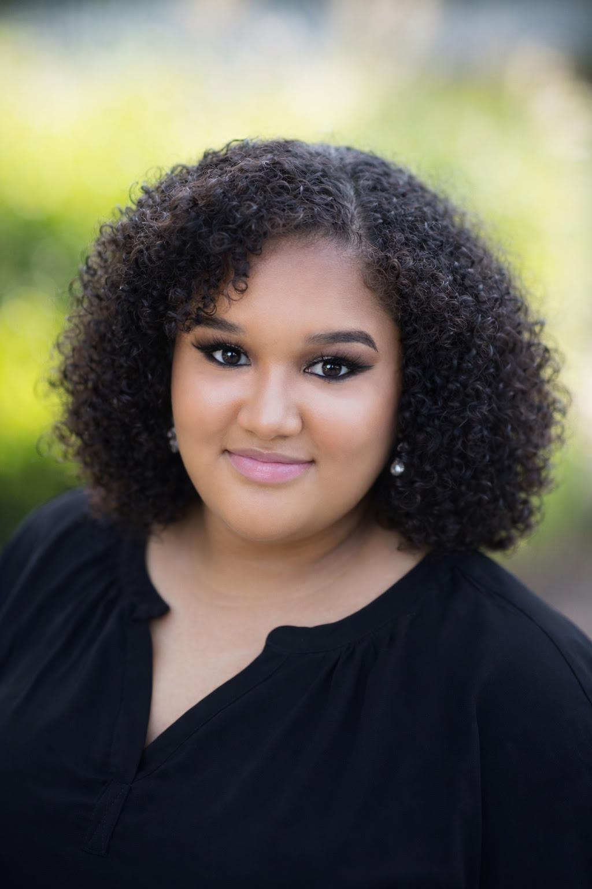

🎃🧡 About Me
Hi everyone! My name is Taliah Kitt. I am from Wilmington, North Carolina and I am a senior at North Carolina A&T State University. My major is Computer Science. Right now, I am focused on finishing school and preparing for my career. After graduation, I want to work in cyber forensics, hopefully with the government. Some things I like to do in my free time are crochet, cook, read, do makeup, take pictures, and play Minecraft. I’m looking forward to learning more in this class and getting to know everyone!
💜 My Fall 2026 Courses
- COMP 322 — Internet Systems
- COMP 360 — Programming Languages
- CRJS 240 — Criminology
- ECEN 375 — Computer Architecture and Organization
- FIN 355 — Investments